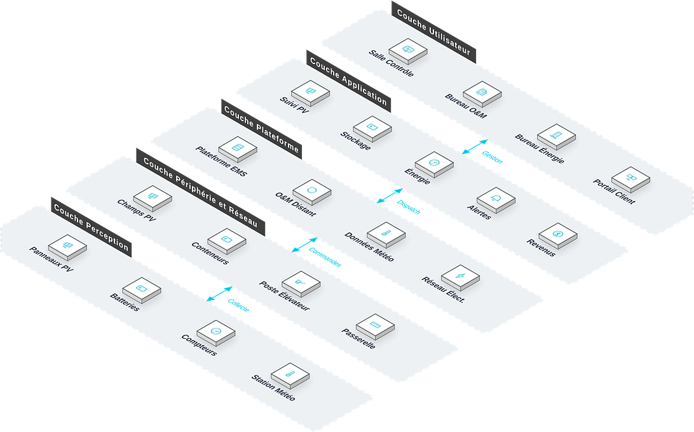

Pour les toitures tertiaires et industrielles, parcs d'usines, villages hors réseau, micro-réseaux et stations de base télécoms, une solution d'énergie verte combinant photovoltaïque et stockage qui répond aux points de douleur clés que sont l'instabilité de l'alimentation électrique, le coût élevé de l'électricité et les fortes émissions carbone en Afrique, réalisant une fourniture d'énergie propre et fiable et l'indépendance énergétique.
Vue d'ensemble
Fournit des solutions d'énergie verte combinant photovoltaïque et stockage pour toitures tertiaires et industrielles, parcs d'usines, villages hors réseau, micro-réseaux et stations de base télécoms, répondant à l'instabilité de l'alimentation, au coût élevé de l'électricité et aux émissions carbone, et réalisant une énergie propre, fiable et une indépendance énergétique.
Applicable à : Parcs d'usines, bâtiments commerciaux, villages hors réseau, stations de base télécoms, micro-réseaux.
- Modules photovoltaïques haut rendement, efficacité de conversion élevée et vérifiée lors des tests terrain
- Algorithmes EMS intelligents maximisant l'autoconsommation
- Conception modulaire du stockage, extension souple
- Fonctionnement couplé réseau ou hors réseau
Bénéfices : Factures d'électricité réduites, émissions carbone diminuées, tension sur le réseau atténuée, alimentation de secours fiable dans les zones instables.
Défis Métier
Dans l'environnement énergétique africain, les clients font souvent face à un approvisionnement instable, des coûts d'électricité élevés et un mix énergétique à source unique ; ils ont besoin d'une solution d'énergie verte intégrant production, stockage et gestion.
Approvisionnement instable
Des coupures fréquentes interrompent l'exploitation ; les groupes de secours brûlent un carburant coûteux et sont bruyants.
Coûts d'électricité élevés
Les tarifs professionnels et industriels sont élevés avec de forts écarts heures pleines/creuses ; l'électricité pèse lourd dans les charges d'exploitation.
Mix énergétique à source unique
Forte dépendance au réseau et au diesel ; l'énergie propre reste marginale.
Zones hors réseau sans électricité
Villages isolés et stations de base n'ont pas d'alimentation stable.
Coupures et tarifs grignotent les marges
Les coupures interrompent l'activité, le carburant renchérit la relève ; tarifs élevés et instabilité grignotent résultats et quotidien.
Intégration photovoltaïque + stockage
Production et stockage doivent coopérer pour l'autoconsommation et l'alimentation de secours.
Énergie visible et pilotable
Production, stockage, consommation et recettes doivent se suivre par la donnée.
Scénarios typiques :
Rôles concernés : Responsables énergie d'entreprise, équipes d'exploitation des sites, exploitants de parcs, équipes de maintenance des stations de base.
Architecture
Stockage Solaire repose sur une topologie métier à cinq couches : Salle Contrôle, Bureau O&M et autres bureaux utilisent les applications quotidiennes comme Suivi PV et Stockage, coordonnés par la couche plateforme ; les équipements de périphérie (Champs PV, Conteneurs) sur site raccordent les équipements de perception (Panneaux PV, Batteries) : les données montent vers la plateforme et les commandes descendent jusqu'au terrain.

Disposition métier : la couche utilisateur regroupe les bureaux (Salle Contrôle, Bureau O&M…) ; la couche application porte les fonctions quotidiennes ; la plateforme fournit Plateforme EMS et O&M Distant ; la couche périphérie et réseau situe les équipements sur site (Champs PV, Conteneurs…) ; les équipements de perception sont déployés sur Panneaux PV, Batteries et le terrain.
Modules clés
Production photovoltaïque
Modules haute efficacité en toiture/au sol, à l'efficacité de conversion vérifiée élevée lors des tests terrain.
Stockage d'énergie
Packs de batteries lithium modulaires à extension souple, avec contrôle thermique pour la durée de vie.
Gestion de l'énergie EMS
Des algorithmes intelligents optimisent charge et décharge pour maximiser l'autoconsommation.
Intégration solaire–stockage–recharge
Les bornes de recharge alimentées en priorité par l'énergie propre.
Supervision à distance
Production, stockage, consommation et recettes visibles en temps réel, avec exploitation à distance.
Capacités d'intégration :
- Modes de revente en raccordement et de fonctionnement autonome hors réseau
- Bascule automatique vers l'alimentation de secours en cas de coupure réseau
- Liaison des bornes de recharge pour l'intégration solaire–stockage–recharge
Avantages et livraison
Avec des algorithmes EMS intelligents et une conception modulaire solaire–stockage, nous livrons de la valeur énergétique — des factures réduites et un approvisionnement fiable — via des levés de site, la réception de raccordement et une exploitation garantie sur le long terme.
Avantages différenciants
Génération performante
Modules photovoltaïques à haut rendement : plus de production au mètre carré.
Dispatching intelligent
L'EMS intelligent maximise l'autoconsommation et optimise l'arbitrage heure pleine/creuse.
Extension flexible
Stockage modulaire évoluant avec l'activité : investissement par phases, risque maîtrisé.
Fonctionnement bimode
Modes raccordé et autonome avec basculement automatique : fiabilité élevée.
Supervision et maintenance à distance
Suivi en temps réel de la production, du stockage et de la consommation.
Adapté à tous les scénarios
Usines, bâtiments commerciaux, villages isolés, stations télécoms : énergie verte et secours.
Processus de mise en œuvre
Étude des besoins
Analyser les charges et l'alimentation actuelle.
Relevé de site
Évaluer les surfaces et conditions d'installation.
Conception
Dimensionner photovoltaïque et stockage ; calculer le retour.
Fourniture
Modules, stockage et équipements EMS.
Installation et mise en service
Génération, stockage et gestion installés.
Raccordement et réception
Essais de raccordement et de bascule.
Remise exploitation
Monitoring en ligne et transfert.
Garantie de service
Valeur client
Factures réduites, émissions baissées, réseau soulage et alimentation de secours fiable dans les zones instables.